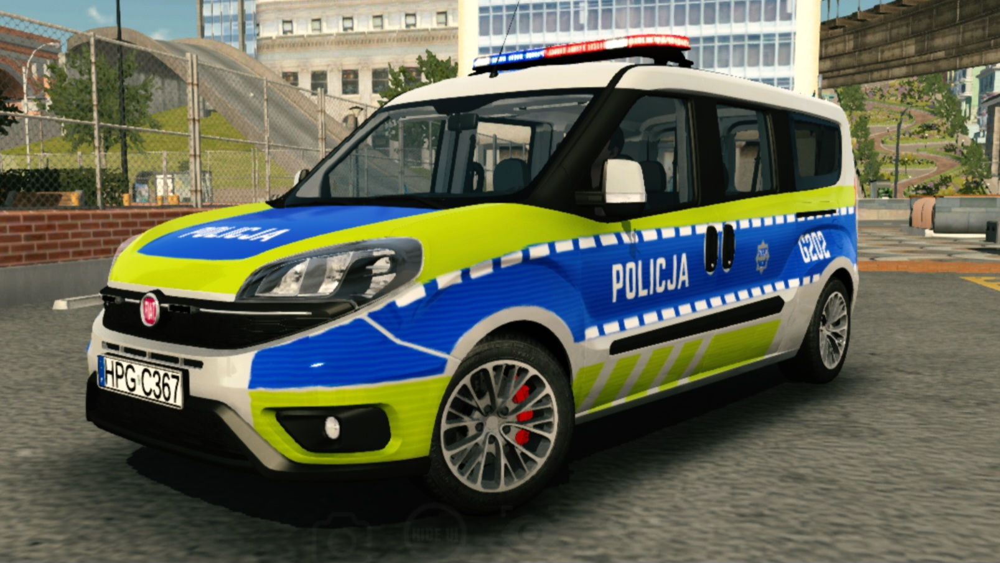
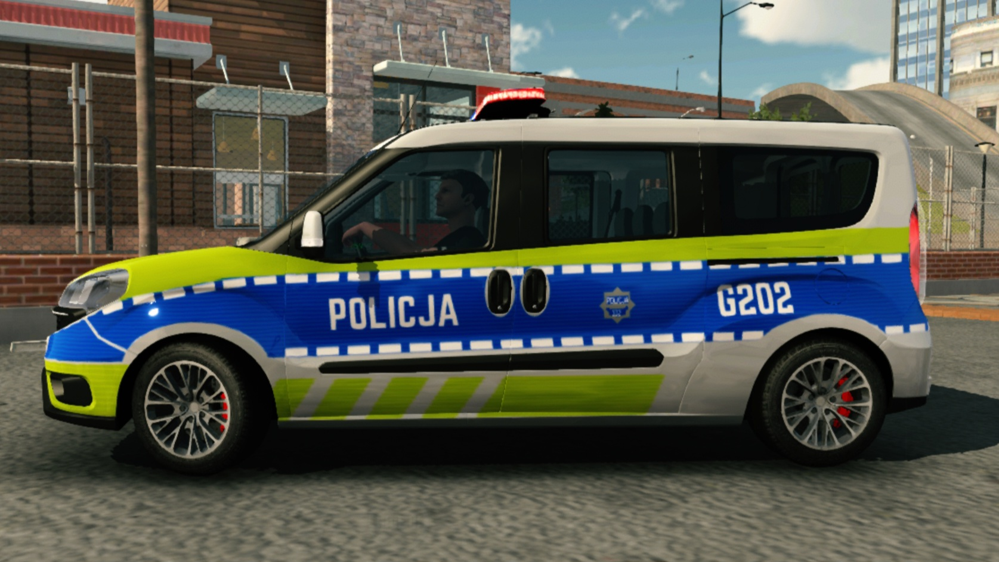
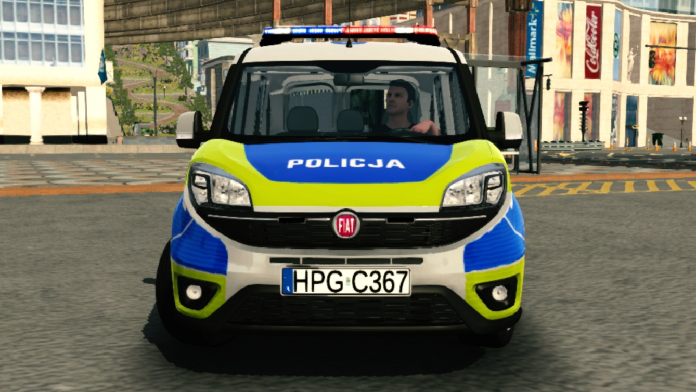
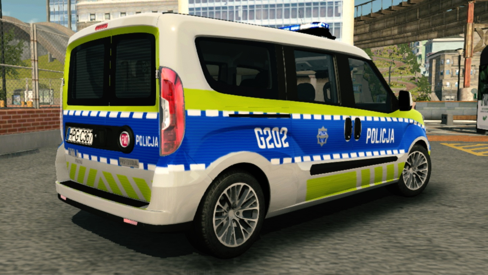
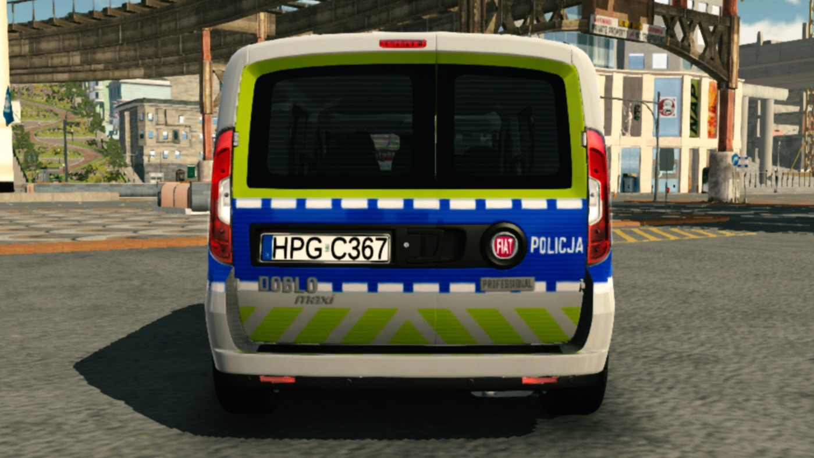

Fiat Doblo II - nowy
Modyfikacja dodaje najnowsze żółto-niebieskie, odblaskowe oznakowanie dla radiozowu Fiat Doblo. Oklejenie zostało wiernie odwzorowane na podstawie fotografii wykonanych podczas targów Europoltech 2019.
Informacje
Aktualizacje